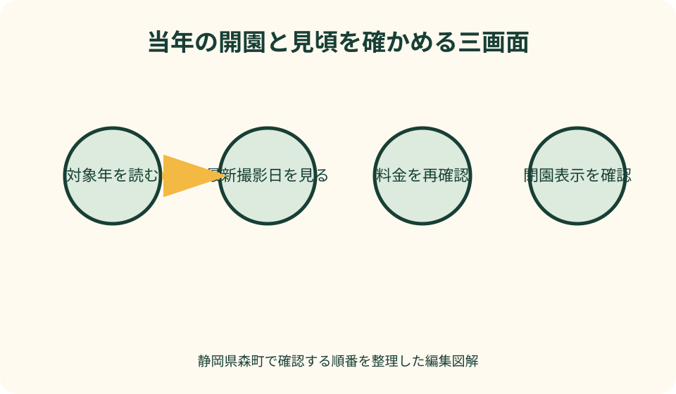
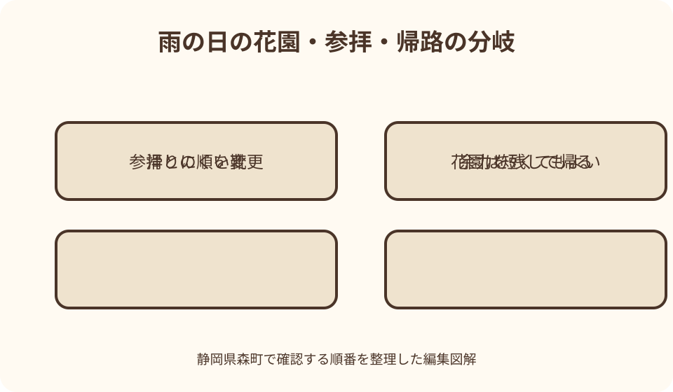

小國神社・初夏の花｜最終確認 2026-08-10
静岡県森町・小國神社の花菖蒲園｜開花情報を確かめて歩く初夏の参拝
一宮花しょうぶ園は、小國神社の初夏を彩る期間限定の花園です。2026年は森町公式と神社公式が開園日、開花の推移、料金、閉園を順に知らせましたが、その日程を翌年へ移して使うことはできません。訪問年の「季節の便り」と森町公式の開花ページを確認し、雨の前後で変わる足元、駐車区画からの歩行、参拝との順番まで決めてから向かいます。

今年開いているかを最初に確かめる
一宮花しょうぶ園は、常設展示を一年中見られる場所ではありません。小國神社公式の「杜の四季めぐり」は初夏の見どころとして紹介し、開園日、閉園日、開花状況は毎年前後するため「季節の便り」で知らせると明記しています。旅行サイトの定型日付ではなく、訪問する年の公式記事を探すことが出発点です。
2026年については、小國神社が5月18日に開園案内を公開し、5月21日から6月中旬頃までを予定としました。その後、6月17日の記事で6月14日に閉園したと報告しています。最初の予定と実際の閉園を別の記事で追う必要があり、「6月中なら入れる」と月だけで判断できないことが分かります。
森町公式は2026年の専用ページで、撮影日ごとの咲き具合を掲載しました。咲き始め、5分咲き、7分咲き、見頃、散り始めという経過が写真とともに更新され、最後に閉園を表示しています。検索結果の見出しだけでなく、ページ内の最新撮影日が自分の訪問日より前かを確認します。
翌年以降にこの記事を読む場合、2026年の日付や料金を予定表へ写しません。神社公式の花しょうぶ園カテゴリを開き、対象年の開園記事が出ているかを確認し、次に森町公式の当年ページを探します。どちらにも当年情報がなければ、開いていると推測せず問い合わせ先へ確認します。
花の生育は気温、雨、日照で進み方が変わります。「例年の見頃」は休日を選ぶ参考にはなっても、当日の花姿を保証しません。直近の更新が数日前なら、その間の天候も見ます。満開だけを成功とせず、咲き始めの新鮮な花や散り始めの落ち着いた園内を選ぶ余地も残します。
開園時間と料金は当年案内へ戻る
2026年の神社公式は、開園時間を午前9時から午後4時半まで、入園料を300円、小学生以下を無料と案内し、団体割引にも触れました。森町公式も同年の期間、時間、料金を掲載しています。これらは2026年の確認材料であり、恒久的な営業条件として固定しません。
到着予定は閉園時刻と同じにしません。駐車してから園入口まで移動し、受付を済ませ、園路を歩き、退出する時間が必要です。雨の日や歩行に時間がかかる同行者がいる日は、終了間際に急いで回る計画を避け、入園受付の扱いを当年案内または問い合わせで確かめます。
小学生以下無料という案内も、対象年と年齢区分を読みます。子どもの人数だけを伝えて団体扱いを期待せず、団体割引の人数や申込条件は主催者へ確認します。現金以外の支払方法を公式が明示していなければ、利用できると決めつけず、必要額を用意したうえで最新案内に従います。
2026年の開園案内には、花しょうぶの株分け販売も記載されました。販売価格、在庫、持ち帰り方法は、その年の企画に属します。観賞料へ販売代が含まれるとは考えず、購入する場合は車内の暑さ、泥や水分、帰宅までの時間を考え、受付で扱いを確認します。
天候不良で短縮開園や臨時対応がある可能性も考えます。公式に通常時間が書かれていても、大雨、強風、園路状態で現場判断が必要になる場合があります。当日の朝に神社の季節の便りとSNS、森町公式の更新を見て、記載がなければ無理に向かわず電話確認という選択を持ちます。
品種と本数の表記差を見学価値の競争にしない
小國神社の「杜の四季めぐり」と2026年開園記事、森町公式の当年ページは、おおむね約80種類・約8万本という紹介をしています。一方、神社公式の「境内の自然」には、園の広さ、系統、約130余種類・40万本という別の表記が残っています。公式内でも数字が一致していません。
この差を、どちらかが必ず誤りだと外部から断定することはできません。作成時期、数え方、株と花茎の単位、植替えなど、差が生じる理由は公式ページだけでは確定できないからです。本記事は最新の年次案内を訪問準備の基準にし、施設の不変の規模として数字を一本化しません。
検索者に必要なのは、最大の本数を見つけることではなく、当年に入園でき、どの程度咲いているかを知ることです。数の大きさを見出しで競わせると、更新の古い数字だけが広がります。開花写真、撮影日、閉園案内の方が、実際の訪問判断には直接役立ちます。
花しょうぶには系統や色、咲き方の違いがありますが、園内の全品種名が当年も同じ位置にあるとは考えません。名札がある場合は園内表示を読み、花壇へ入って札を探したり、植物へ触れて向きを変えたりしません。分からない花は写真と位置を記録し、受付で尋ねます。
子どもへ説明する際も「何万本あるからすごい」で終えず、白、紫、黄など色を探し、つぼみと開いた花を比べ、水辺を好む植物の環境を見る観察へ変えます。数字を覚えるより、花を傷めずに歩き、同じ場所を次の人へ渡すことを学べる時間にします。
雨の日は花より先に足元を見る
花しょうぶの季節は雨と重なりやすく、濡れた花には晴天と異なる魅力があります。ただし、雨が似合う花であることと、来園者の足元が安全であることは別です。園路の材質やぬかるみの場所を本記事から断定せず、当日の現地表示を見て、滑りにくく泥が付いてもよい靴を選びます。
傘は視界を狭め、すれ違う人や花へ先端が近づきます。混雑時は傘を水平に持たず、立ち止まって撮影するときも後ろの通行を確認します。レインコートを使う場合はフードで左右が見えにくくなるため、曲がり角や段差の前で顔を上げます。
大雨の最中だけでなく、雨上がりにも注意が必要です。水たまりを避けて園路の端へ寄ると、植栽や管理区域へ踏み込むおそれがあります。靴が汚れることを前提に中央を静かに歩き、通れない箇所は跨いだり近道したりせず、係員へ迂回を尋ねます。
写真撮影では、傘、カメラ、荷物を同時に扱わない工夫をします。三脚や大きな機材の利用可否を推測せず、混雑と園内ルールを確認します。スマートフォンを花へ近づけるときも、画面だけを見て後退せず、撮影場所を決めてから立ち止まります。
雷、強風、増水が心配な日は、花の見頃より安全を優先します。小國神社の境内には宮川や樹木があり、花園だけを切り離して考えられません。気象情報と神社のお知らせを確認し、現地で不安を感じたら受付や建物へ戻り、別日に変更します。

駐車場から花園までを一つの行程にする
車で訪れる人は、小國神社の交通案内で利用可能な駐車区画を確かめます。花しょうぶ園専用の近い区画へ必ず停められるとは限りません。駐車台数の総数より、その日に案内された区画から花園入口まで同行者が歩けるかを見ます。
2026年の町公式は、一宮花しょうぶ園を小國ことまち横丁の南側と説明し、神社の「杜の四季めぐり」は西側と表現しています。地図上の基準点が違う可能性があるため、方角の一語だけで探しません。現地の花しょうぶ園案内、受付表示、係員の案内を使います。
雨の日は駐車場での乗降にも時間がかかります。子どもを先に降ろして一人で待たせたり、高齢者を車路上に立たせたりしません。傘を開く場所、車椅子や歩行器を出す場所、荷物をまとめる順を決め、後続車の動きを見ながら全員で歩行側へ移ります。
繁忙日は正面に近い場所を探して周回せず、誘導された区画へ入ります。花しょうぶ園、参拝、ことまち横丁の利用者が同じ時間帯に動くため、駐車位置を忘れると帰路で負担が増えます。区画名、近くの表示、参道への入口を写真に残し、家族の連絡先へ共有します。
公共交通で到着する場合も、降車後すぐ花園へ着くとは限りません。バス停から受付までの歩行と帰りの乗車時刻を含めます。交通の詳細はアクセス記事へ譲り、本記事では、入園前に帰路を保存し、花の観賞時間をその範囲に収めることを優先します。
参拝と花園の順番を同行者で変える
一宮花しょうぶ園は小國神社の神域を訪れる行程の一部です。花だけを急いで撮って帰るか、先に参拝するかに唯一の正解はありません。到着時の開花園の混雑、祈祷予定、天候、同行者の体力を見て、花園と参拝のどちらを先にするか決めます。
雨が強まりそうなら、比較的歩きやすい時間に花園を先に見て、参拝は天候を見ながら続ける考え方があります。反対に、祈祷受付や家族の約束がある日は参拝を先にします。花園の終了間際に間に合わせるため、神前での時間を慌ただしくする旅程は避けます。
先に参拝する場合は、授与品や傘、手荷物を抱えて園路を歩くことになります。袋を雨に濡らさない準備をし、両手を空けられる鞄を選びます。先に花園へ行く場合も、泥の付いた靴で参道へ戻ることを考え、入口で泥を落とす場所と方法を現地案内に従って確認します。
ことまち横丁での食事や買い物を加えるなら、三つ全部を固定しません。花園、参拝、休憩のうち主目的を一つ選び、混雑や疲れが出たら残りを減らします。子どもが空腹になる時間、高齢者が薬を飲む時間、帰りのバスを優先し、予定の達成数を評価基準にしません。
境内の自然を続けて歩く場合も、花しょうぶの時期に宮川や西参道が同じ状態とは限りません。神社公式の境内自然ページで場所の関係を知り、当日の立入案内へ従います。花園の入園料を払ったことを、神域のどこへでも入れる権利とは考えません。
子連れと高齢者は観賞範囲を先に小さくする
子どもと歩く日は、花の列を全部回ることより、手をつないで園路内を歩ける範囲を選びます。水や泥に興味を持っても、柵の内側や植栽へ入らせません。入口で「走らない、花に触れない、離れたら受付へ戻る」の三点を短く伝えます。
ベビーカーを使えるか、園路幅や段差がどうかは、写真だけで判断しません。雨天時は車輪に泥が付き、傘を差しながら押す負担も増えます。利用可否と推奨経路を受付へ尋ね、難しい場合は抱っこひも、交代観賞、入口付近だけを見る方法へ変えます。
高齢者には、駐車場から受付、園内、参拝、車へ戻る総歩行を伝えます。「花園だけなら短い」と見積もらず、雨具の着脱、トイレ、休憩を含めます。杖や歩行器を使う人は、濡れた路面で先端や車輪が滑らない状態かを確認します。
休憩場所や椅子の数を本記事で保証しません。座れる前提で園内へ入らず、疲れたら入口へ戻る基準を決めます。体調が変わった際は、一人を残して家族全員が先へ進まず、付き添いと連絡役を置きます。暑さがある日は雨天でも水分を用意します。
服が濡れた子どもや体が冷えやすい高齢者には、薄手の着替え、タオル、靴下、袋を用意します。車へ戻ってから着替える場合は駐車区画までの距離を考えます。観賞時間を延ばすための装備ではなく、早めに切り上げて安全に帰るための備えです。
良い点：開花の途中経過まで公式で追える
森町公式が撮影日ごとの開花写真を並べることで、単に「開催中」かだけでなく、咲き始めから散り始めまでの変化を判断できます。遠方から訪れる人は、更新日の新しさと自分が好む花姿を照らし合わせ、満開の週末へ集中しない選び方もできます。
神社公式は開園案内だけでなく、開花記事と閉園記事を同じ花しょうぶ園カテゴリからたどれるようにしています。初夏の予定から実際の終了まで確認できるため、過去記事の日付を現在の情報と取り違えにくくなります。記事タイトルの年号を必ず読みます。
花園だけでなく、参拝、宮川の自然、ことまち横丁を同じ訪問で検討できることも魅力です。条件が合えば、花を見る時間と神域で静かに過ごす時間をつなげられます。ただし、選択肢が多いことを全部回る義務に変えず、同行者に合う一つか二つへ絞ります。
森町公式の花めぐり動画は、小國神社の花しょうぶを、極楽寺のあじさいや香勝寺のききょうなど町内の初夏の花とともに紹介します。別日に訪れる候補を知る入口として有用です。同日に複数園を急いで巡るのではなく、各施設の開園と足元を個別に確認します。

注文したい点：数字と現在情報を分けて表示してほしい
神社公式内で花しょうぶの品種数と本数に異なる表記があると、初めての読者はどれを現在値として使うか迷います。歴史的な規模と現在の年次案内を分け、各数字の確認年月や数え方を示せると、古い紹介がそのまま転載されることを減らせます。
花園の位置も、ことまち横丁の南側と西側という説明が公式間にあります。どちらも周辺を示す表現として理解できても、初訪問者には一枚の現在地図が分かりやすいです。駐車区画、花園入口、参道、トイレ、休憩場所を同じ方位で示す案内が望まれます。
当日の園路状態も、開花写真と一緒に短く伝わると助かります。雨天時の推奨靴、通りにくい区間、ベビーカーや歩行補助具の相談先が更新欄にあれば、家族は花の状態だけでなく同行者の安全から訪問可否を判断できます。
閉園後も過去ページが検索結果に残るため、ページ上部に「今年度は閉園」「次年度は未発表」と明確に出る仕組みが重要です。利用者も年号を省いた画面だけを共有せず、URL、更新日、対象年度を一緒に伝える必要があります。
代案・結論：三つの公式画面を順番に読む
第一に、小國神社公式の花しょうぶ園カテゴリで、訪問年の開園記事があるかを確認します。第二に、森町公式の当年ページで直近撮影日の開花状況と閉園表示を見ます。第三に、神社の交通案内と当日のお知らせで駐車・規制を確認します。この順なら、古い見頃情報だけで出発することを避けられます。
雨なら、靴、傘の扱い、着替え、園路の相談先を準備します。子どもや高齢者が一緒なら、全周観賞を前提にせず、入口へ戻る時間を決めます。写真撮影は歩行を妨げない範囲にし、花や札へ触れず、係員の案内を優先します。
花園と参拝の順は、到着時に決め直して構いません。祈祷の予定があれば参拝を軸にし、雨が強まりそうなら花園を先にするなど、目的と天候を比べます。食事や買い物は余力があるときだけ加え、帰路を遅らせる原因にしません。
結論は、最大の本数や完璧な満開日を当てることではありません。当年の公式情報に戻り、直近の花姿と同行者の足元を確かめ、見られる範囲を丁寧に歩くことです。条件が合わない日は翌年や町内の別の花へ予定を移すことも、花を大切に楽しむ選択です。
大石の視点：見頃より家族が戻れる余力を残す
私（大石）は、花の案内で「今が見頃だから行くべき」と急がせません。公式写真が美しくても、雨、駐車位置、歩行距離、帰りの交通は家族ごとに違います。見頃は訪問を考える材料の一つであり、無理なく戻れる余力の方を先に確認します。
数字の違いを見つけたときも、大きい方を魅力的な宣伝文に使いません。約80種類・約8万本と、約130余種類・40万本という公式表記が併存する事実を示し、年次案内へ戻ります。不明な点を不明なまま区別することが、地域情報への信頼を守ります。
小國神社の花しょうぶは、園芸施設だけを訪れる時間ではなく、神域の初夏に触れる機会です。参拝者、植物を育てる人、地域の道を使う人が同じ場を共有します。近い駐車場や空いた撮影位置を奪い合わず、案内された範囲を静かに歩くことを大切にします。
この記事の確認日は2026年8月10日で、同年の花しょうぶ園はすでに閉園しています。次の開園は本記事から予告できません。小國神社と森町の公式発表を待ち、対象年、更新日、開花撮影日、閉園表示を確認してから、初夏の一日を組み立ててください。
公式情報・確認先
掲載内容は次の一次情報を基礎に整理しました。営業、料金、催し、交通は変わるため、出発前または手続き前にリンク先で最新情報を確認してください。
- 令和8年一宮花しょうぶ園 5月21日より開園（遠江国一宮 小國神社、2026-08-10確認）
- 令和8年 一宮花しょうぶ園 閉園のお知らせ（遠江国一宮 小國神社、2026-08-10確認）
- 杜の四季めぐり（遠江国一宮 小國神社、2026-08-10確認）
- 境内の自然（遠江国一宮 小國神社、2026-08-10確認）
- 小國神社一宮花しょうぶ園について 6月14日閉園（静岡県森町、2026-08-10確認）
- 森町の花めぐり動画公開（静岡県森町、2026-08-10確認）
- 観光案内・地図（静岡県森町、2026-08-10確認）